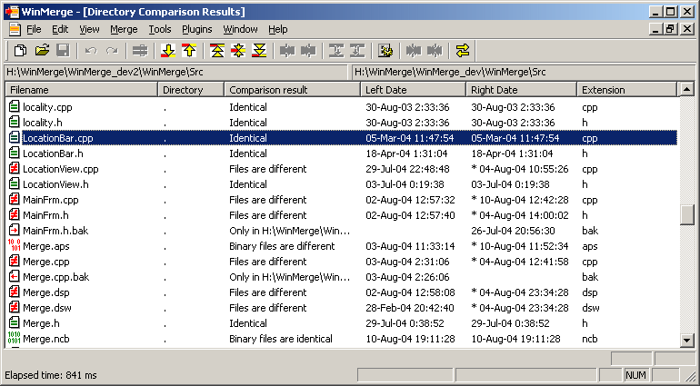

8. Comparing directories
The Directory compare window displays all of the files and subdirectories compared in a sortable list view. Files and subdirectories may be synchronized by copying or deleting, and actions may be performed on multiple items simultaneously. The columns displayed may be changed and reordered.

Directory comparison has two different modes. The mode is selected in the Open dialog with the "Include Subfolders"-checkbox.
-
When subfolders are included, all subfolders and their contents are compared. Files are displayed depending on the options on the menu (eg, ). Common directories are never displayed (but all files inside of them are). Directories only existing on one side are displayed according to the menu options (eg, ).
This mode does not allow browsing folders and can be slow if there are many subfolders and files.
-
When subfolders are not included only files in selected folders and names of subfolders are shown.
This mode allows browsing folders by opening subfolders and parent folders. This mode has the advantage of speed, as it may be much faster when there are many subfolders that need not be examined. Also the display may be easier to manage, showing only items in one folder.
8.1. Directory compare statepane
During directory compare proceeds, following statepane is shown:
Directory compare can be stopped by selecting ""-button and results for files and directories compared so far are shown. After directory compare finishes, "" button text is changed to "". Now statepane can be closed by selecting that button or pressing any key from keyboard.
Statepane can be opened from -menu again if needed. Statepane always shows current status of compare so it can be used to verify there are no different files left to handle.
 |
Enable option "Close Compare statepane automatically" and statepane closes automatically after compare is ready. |
8.2. Compare results
Files and directories are compared and divided into several categories:
| Identical text files |
| Differing text files |
| Identical binary files |
| Differing binary files |
| Left-only folders |
| Right-only folders |
 Left-only files Left-only files |
| Right-only files |
| Skipped directories (filtered out) |
| Skipped files (filtered out) |
| Directories & files that couldn't be compared. This usually happens when other program has locked the file. |
8.3. Selecting files to show
In "" menu there are several choises for selecting which categories listed above to show/hide.
-
: shows and hides files detected as identical
-
: shows and hides files detected as different
-
: shows and hides files and directories present only in left side
-
: shows and hides files and directories present only in right side
-
: shows and hides files detected as binaries
-
: shows and hides files and directories filtered out by file filters
8.4. Columns in directory compare
By default these columns are visible:
-
Filename
-
Directory : Relative directoryname for compare path. If subdirectories are not included this is empty.
-
Comparison result : Verbose comparison result (see also Short Result)
-
Left Date & Right Date: Modification date of item. Note that newer date is prefixed with asterisk "*".
-
Extension : File's extension, handy for sorting
Following columns are available through ""-dialog:
-
Binary : Column contains asterisk "*" when file is binary. Handy for sorting and to use with "Short Result"-column.
-
Left Attributes & Right Attributes : Shows fileattributes.
-
Left Creation Time & Right Creation Time : Item creation time.
-
Left Encoding & Right Encoding : File encoding.
-
Left File Version & Right File Version : Version number from file if present. Note that this is read for only some binary files.
-
Left Size & Right Size : File size in bytes.
-
Newer File : Shows which side is newer.
-
#differences : Amount of total differences found from files.
-
#sig. differences : Amount of significant differences, total differences - ignored differences.
8.5. Browsing folders
Browsing folders is only possible when subfolders are not included to compare. Then parent folders (".."-item) and subfolders existing in both sides can be compared by opening them.
Parent folder can be opened if it is not same directory. These two icons indicate if parent folder can be opened:
| Parent folder can be opened. |
| Parent folder cannot be opened. It propably is same directory for both sides. |
8.6. Navigation in directory compare
In addition moving selection using mouse or keyboard, also -menu navigation commands, toolbar buttons and shortcut keys can be used. For example "" finds next different file and selects it.
 |
Unique files and directories are considered as different ones. |
Multiple files/directories can be selected. However not all operations are possible with multi-selection.
8.7. File operations in directory compare
8.7.1. Copying, moving and deleting
Directory compare allows user to copy and delete files and directories. File operations are available through context menu (right-click with mouse). Also files can be opened to associated program or into external editor.
In file operation menu, there are one or two numbers shown, depending on files/folders selected. If there is one number shown, for example "" that means there is 5 items selected, and all items can be copied. But if there is two numbers shown, for example "", that means there are 5 items selected but only 3 items can be copied.
Most common operation is copying files from side to side. File can be copied from side to side using -menu items, toolbar buttons and context menu. If multiple files are selected, or file to overwrite is read-only, confirmation dialog is shown.
Sometimes it is useful to copy certain files and/or directories to another directory instead of another compared directory. This can be done selecting "" or "" items.
Another file/directory operation is deleting. Items in another or both sides can be deleted. There is "Send deleted files into Recycle Bin" option in system options. Its higly recommended to keep that option enabled so deletion can be undone if accidents happen. Note however recycle bin does not help if its disabled from Windows settings.
Moving is just shortcut for copy + delete.
 |
File/directory deletion cannot be undone if recycle bin is not used! |
8.7.2. Opening files
There are three items in -menus:
-
: Opens file with application registered handling filetype for Windows, if there is one.
-
: Open with external editor. Default editor can be selected from options, Notepad is used by default.
-
: Opens "Open With..." dialog asking from user with which application files should be opened.
8.7.3. Archiving
-menu in directory compare context menu allows adding selected items to archive file.
|
Archive support requires that compatible version of 7-zip is installed to system. |
Zip-submenumenu has four items:
-
: Adds left-side files and folders (recursively) to the archive file
-
: Adds right-side files and folders (recursively) to the archive file
-
: Adds files and folders (recursively) from both sides to the archive file. Because filenames are same, files must be put to subfolders inside archive. Left-side files are put to subfolder Original/ and right-side files are put to subfolder Altered/.
-
: This is like above , but this item adds only different files (including unique files) from both sides.
After selecting one of -menu items dialog pops up asking filename and archive type from user. WinMerge cannot add files to existing archive files but it always creates new archive file.
|
WinMerge looks for subfolders Original/ and Altered/ in archive files. If archive file contains these subfolders and same filename is given to both sides WinMerge compares contents of those two folders. |
If directory compare shows contents of archive files WinMerge updates changes done to files in file compare into original archive file. But WinMerge does not update archive contents for files added/deleted/copied. User can create a new archive file using above menuitems instead.
8.8. Copying path- or filenames
In context menu there are items for copyging selected items' paths or filenames to clipboard. This feature makes it easy so get list of changed files, for changelogs etc.
-
has three subchoices like other file handling functions. It copies full pathnames of selected items to clipboard, one per line.
-
copies only filenames without paths.
8.9. Customising directory compare
There are many ways to customize directory compare:
-
Sorting by column : Sorted by column can be selected by clicking column name with mouse. Little arrow appears next to column name indicating that results are sorted by this column and sort order.
-
Selecting visible columns : "Display Columns" dialog can be opened from -menu or by right-clicking column header with mouse.
-
Changing order of columns : Order can be changed in "Display Columns" dialog or by drag & dropping column names with mouse.
8.10. Protecting directories / read-only directories
If user wants to protect one or both sides from changes, user can set them to read-only from -menu.
 |
Setting read-only protects files and directories in current compare view only. |
Protected status is inherited to opened files from directory compare. If user compares two directories, sets another to protected and opens two files for comparing, file opened from protected side has protection set too.
Protection status is shown in statusbar, there are panes for left and right side.